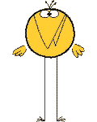

Citation extraite de l'Écume des Jours, de Boris Vian
Le vent se frayait un chemin parmi les feuilles et ressortait des arbres tout chargé d'odeurs de bourgeons et de fleurs. Les gens marchaient un peu plus haut et respiraient plus fort car il y avait de l'air en abondance. Le soleil dépliait lentement ses rayons et les hasardaient avec précaution dans des endroits où il ne pouvait atteindre directement, les recourbant en angles arrondis et onctueux, mais se heurtait à des choses très noires et les retirait vite, d'un mouvement nerveux et précis de poulpe doré. Son immense carcasse brûlante se rapprocha peu à peu puis se mit, immobile, à vaporiser les eaux continentales et les horloges sonnèrent trois coups.Cette image n'a rien à voir avec le sujet : , mais elle est là, et aussi vrai que 0<1, elle y restera.
| Titre de colonne | Titre de colonne aussi |
| Une première case | Une deuxième case |
| Une troisième... | |
| ... et la dernière ! |